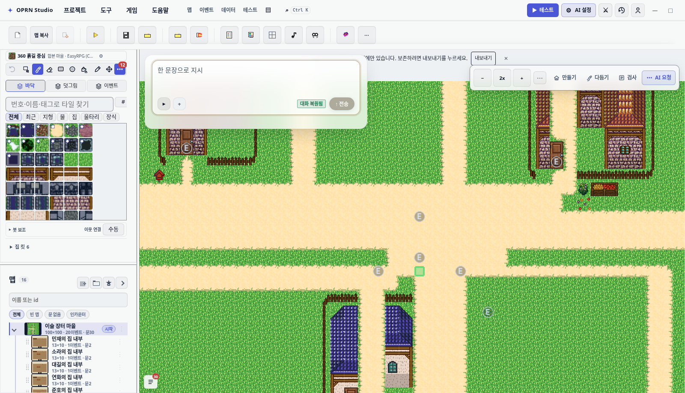
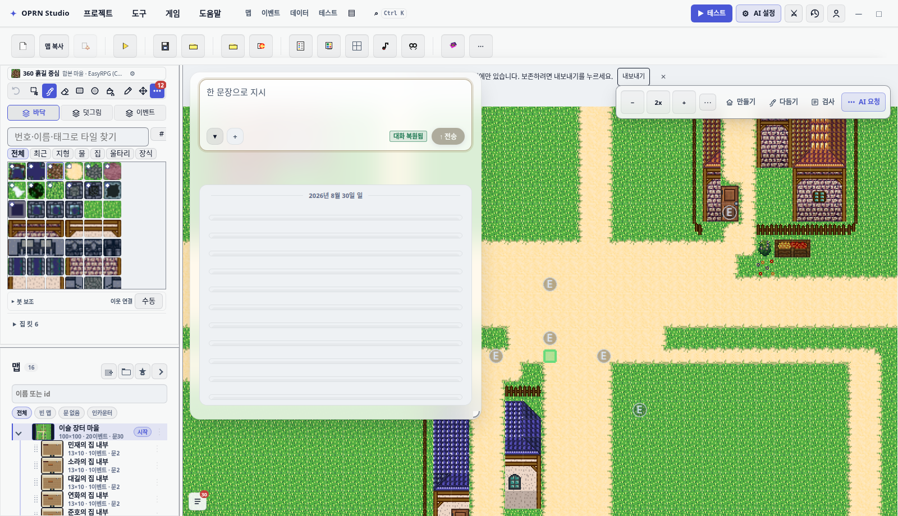
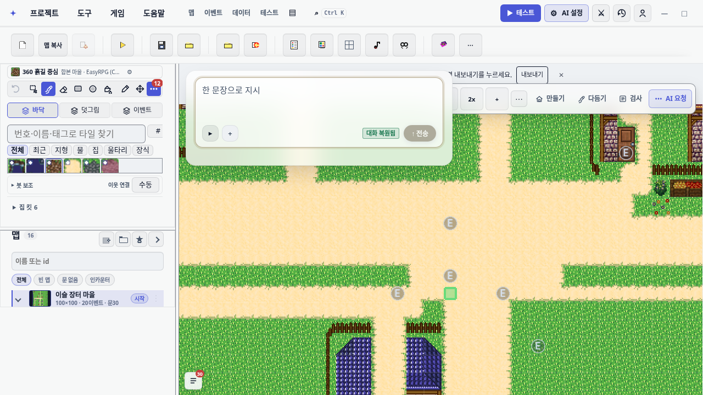
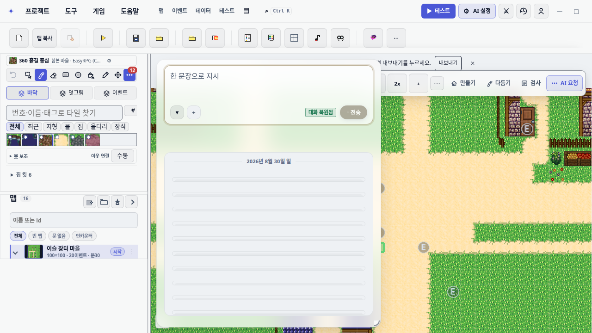

감독 지시는 "에디터 왼쪽 위 조수가 기본적으로는 접혀 있다가, 클릭하거나 내용이 나와야 하는 경우만 아래로 자연스럽게 나오는 방식"이었다. 두 갈래를 물어 결정했다.
| 결정 항목 | 선택 | 뜻 |
|---|---|---|
| 접혔을 때 남는 것 | 입력줄 한 줄 | 왼쪽 위에 컴포저만 남는다. 클릭 없이 바로 타이핑할 수 있고, 대화·변경 카드만 그 아래로 펼쳐진다. |
| 다시 접히는 시점 | 유휴 8초 | 턴이 끝나고 8초 동안 조작이 없으면 스스로 접힌다. 마우스·키 입력은 대기를 처음부터 다시 센다. |
패턴 용어: UX 원칙은 progressive disclosure, 컴포넌트는 disclosure(접이식) 패널, 남는 한 줄이 trigger, 아래로 흘러나오는 본문이 flyout이다. 입력줄이 위에 고정되고 결과가 아래로 열리는 이 형태는 command-palette 형(Spotlight·Raycast)이다.




calc(100% - 24px) 상한에 맞춰 줄어든다.기존 is-collapsed(48px 칩)와 다른 축의 새 상태 is-glass-folded 를 두고 glass 도크에서만 쓴다. side(오른쪽 컬럼)·float(입력줄 캡슐)은 "아래로 펼침"이 성립하지 않는 형태이므로 손대지 않았다 — ai-collapse / oprn:ai-panel-collapsed / ai-collapsed-restore 계약이 그대로다.
ai-collapse)은 fold 토글로 의미가 바뀐다. testid·aria-expanded 배선은 유지하고 라벨만 조수 대화 접기/펼치기로 바꿨다.oprn:ai-panel-collapsed === "1" 도 칩 접힘이 아니라 fold 로 라우팅한다(멱등, 새 키 없음).order/* DOM 순서는 [toolbar, body, collapsedRestore, risingOverlay, stickyZone, commandBar] 이고 side/float 이 그 순서를 쓴다. DOM 을 재배치하면 세 도크가 함께 바뀐다. */ .chat-dock-glass > .ai-command-bar { order: -1 } /* 입력줄 */ .chat-dock-glass > .ai-rising-sticky-zone { order: 0 } /* 완료·되돌리기 — 접혀도 보인다 */ .chat-dock-glass > .ai-chat-body { order: 1 } /* 대화 — 접히는 대상 */
max-height본문은 flex: 1 1 auto; min-height: 0; overflow: auto 로 카드의 스크롤 영역을 맡고 있다. 그래서 grid-template-rows: 0fr→1fr 은 쓸 수 없다 — flex-grow 가 상자를 먼저 늘려 펼치는 순간 카드가 최대 높이로 튀고 행만 안에서 자란다. height: auto 도 같은 이유로 못 쓴다. max-height 는 flex 의 used size 를 그대로 덮으므로 flex 체인과 스크롤러를 건드리지 않는다.
inset: 12px auto auto 12px 를 그대로 둔다. 좌하단으로 내려가는 is-collapsed 와 달리 같은 자리에서 아래로 열리는 것이 이 상태의 핵심이다. 실측 y − canvas.y = 12px(두 해상도 모두).
증상. 본문은 max-height: 0 으로 정확히 접히는데 카드가 620px 로 남았다. 접힘 rect 520×620, 컴포저는 156px. 캔버스 면적의 20% 를 넘어 e2e chat-dock-switch.spec.ts:252 가 빨간색이었다.
원인. 13-assistant-modern.css:15 가 height: min(620px, calc(100% - 24px)) 를 (0,7,0)/(0,6,0) 으로 선언한다. 접힘 규칙을 짧게 .chat-dock-glass.is-glass-folded(0,3,0) 로 쓰면 height: auto 가 그 선언에 진다. @import 를 뒤에 넣는 것만으로는 못 이긴다.
/* 같은 :not() 짝을 달아 (0,8,0)/(0,7,0) 으로 올린다. (0,7,0) 은 13 의 첫 선택자와 동점이지만 이 파일이 뒤에 import 되므로 이긴다. */ .editor-layout .ai-chat-panel.chat-dock-glass.is-glass-folded:not(.is-history-open):not(.is-studio):not(.is-collapsed):not(.is-map-first-idle), .ai-chat-panel.chat-dock-glass.is-glass-folded:not(.is-history-open):not(.is-studio):not(.is-collapsed):not(.is-map-first-idle) { height: auto; }
| 해상도 | 고치기 전 접힘 | 고친 뒤 접힘 | 캔버스 20% 상한 | 판정 |
|---|---|---|---|---|
| 1600×920 | 520×620 = 322,400 | 520×174 = 90,480 | 204,698 | PASS |
| 1280×720 | — | 486×174 = 84,564 | 115,122 | PASS |
부수 결정 하나. applySize() 는 접힘에서 높이만 비우고 폭은 유지한다. 폭까지 비우면 CSS clamp(360px, 38vw, 520px) 로 돌아가 저장된 폭이 사라지고 펼치는 순간 카드 폭이 튄다.
CSS 는 새 파일이 아니라 17-assistant-modern-shell.css 끝에 넣었다. check-css-budget.mjs 가 cssFileCount 를 262 로 래칫하고 있어 18번 파일을 만들면 게이트가 막는다. 기준선을 푸는 --save-baseline 은 래칫을 영구히 무력화하므로 쓰지 않았다. 이 파일이 조수 셸 기하의 마지막 레이어라 파일 끝의 캐스케이드 위치가 새 18번 파일의 시작과 같다.
유휴 자동 접힘은 2026-08-27 에 의도적으로 걷어낸 동작의 부분 복원이다. 그때 문제는 답이 48px 얼굴 뒤로 사라지는 것이었는데, 입력줄이 남는 fold 에서는 애초에 성립하지 않는다. 그 외에도:
is-turn-error·failed) · 진행 중 턴 · 답 대기 질문 · 비어 있지 않은 입력 · 패널 내부 포커스 · 포인터 hover · 바닥에서 4px 이상 올라간 로그(위로 읽는 중).keydown·input·focusin·wheel·scroll·pointerleave.inert 로 Tab 순서에서 빠진다. 접힘 중 .ai-chat-resize-handle 은 숨는다.GLASS_FOLD_IDLE_MS = 8000(aiPanelLayout.ts) — 테스트가 같은 상수를 가져다 쓴다.칩 접힘 쪽 계약은 그대로다: AUTO_COLLAPSE_AFTER_AI_MS = 0 이고 scheduleCollapseAfterAiWork 본문은 여전히 비어 있다.
| 항목 | 결과 |
|---|---|
npx vitest run — 조수 패널 11개 파일 | 103 / 103 신규 test/aiGlassFold.test.ts 10건 포함 |
npm run gates:css | 통과 회귀 0건, cssFileCount 262 유지, graph orphan 0 |
npm run typecheck | 선행 4건 손댄 파일의 오류는 전부 기준선 워크트리에서도 같은 오류(줄번호만 이동) |
test/aiGlassFold.test.ts 가 잠그는 계약: 접힌 채 부팅(칩 접힘 아님) · 저장된 "1" 라우팅과 비덮어쓰기 · 접힘에서도 입력·전송 생존 + 본문 inert · 셰브론 토글과 aria-expanded · 셰브론으로 연 카드는 유휴로 닫히지 않음 · 접힌 채 전송하면 펼쳐지고 턴 뒤 다시 접힘 · is-turn-error 차단 · 입력 내용 차단과 비운 뒤 재접힘 · hover 일시정지/해제 · side·float 무영향.
다른 워크트리의 dev server 를 재사용하지 않도록 이 워크트리 전용 서버(9506)를 띄워 확인했다.
| 스펙 | 결과 |
|---|---|
chat-dock-switch.spec.ts (접힘 면적·앵커 포함) | 통과 |
ai-new-chat-docks.spec.ts · _ai-composer.spec.ts | 통과 |
assistant-change-preview.spec.ts · undo-hotkey-focus-handoff.spec.ts · _assistant-glass-shots.spec.ts | 통과 |
qa-db-ai-dock.spec.ts:20 | 선행 결함 기준선 워크트리에서도 같은 자리(db-tab-enemies not visible)에서 실패 |
editor-ai-authoring-entry.spec.ts | 선행 결함 마운트되지 않는 .editor-statusbar 의 ai-connection-status 를 기다린다 |
계획이 필수로 요구한 항목 셋 전부.
| 확인 | 1600×920 | 1280×720 | 판정 |
|---|---|---|---|
| 접힘 카드 = 입력줄 한 줄 | 520×174 (컴포저 156) | 486×174 (컴포저 156) | OK |
| 좌상단 앵커 유지 | y − canvas.y = 12px | 12px | OK |
| 본문 접힘/열림 | max-height 0px ↔ 920px | 0px ↔ 720px | OK |
| 안쪽 스크롤러 생존 | .ai-chat-log 392 / 681, scrollTop 0→200 | 352 / 681, 0→200 | OK |
| 상단 도구막대 겹침 | tool-select 자기 자신이 hit | 동일 | OK |
스크롤러 실측이 계획의 최대 위험이었다. Chromium ::details-content 가 flex:1/overflow:auto 자식을 무력화하는 전례가 있어, 계산된 스타일로는 드러나지 않는 종류의 파손을 의심했다. 실제로 max-height 여닫기는 스크롤러를 건드리지 않았다 — 펼친 뒤 .ai-chat-log 가 clientHeight 392 < scrollHeight 681 이고 scrollTop 이 0에서 200으로 실제로 움직인다. 폴백(max-height 전환)은 이미 채택한 방식이라 별도 대응이 필요 없었다.
| 파일 | 무엇 |
|---|---|
src/editor/panels/aiChatPanel.ts | fold 상태 기계(applyGlassFold·scheduleGlassFold·canScheduleGlassFold·타이머), 턴 종료 3곳 배선, applySize 폭 유지/높이 해제, restoreCollapsed 가 fold 도 연다 |
src/editor/panels/aiPanelLayout.ts | GLASS_FOLD_IDLE_MS = 8000 |
…/17-assistant-modern-shell.css | 파일 끝 fold 섹션 — order, max-height 전환, 접힘 높이(특이도 짝), 손잡이 숨김, prefers-reduced-motion |
test/aiGlassFold.test.ts | 신규 10건 |
| 단위 6개 파일 | 칩 접힘 축을 쓰는 스펙을 side/float 으로 고정하고 glass 는 fold 로 갈랐다 |
| e2e 6개 파일 | glass 부팅이 접힘이므로 셰브론 해제를 넣거나 접힘 클래스 양쪽을 받아들이게 했다 |
openwiki/editor-ai-panel.md | 맨 위 항목 추가 + 2026-08-27 항목에 "본문 접힘만 되살았다" 명시 |
qa-db-ai-dock.spec.ts:20 과 editor-ai-authoring-entry.spec.ts 의 선행 결함은 이 변경 범위 밖이다. 각각 Database 탭 가시성과 사라진 .editor-statusbar 문제다.is-prior-turn is-collapsed)은 복원 경로의 기존 동작이다. 읽기 쉬운지는 별개 판단거리다.